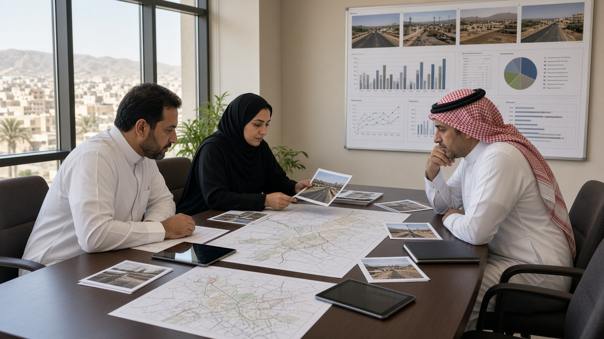
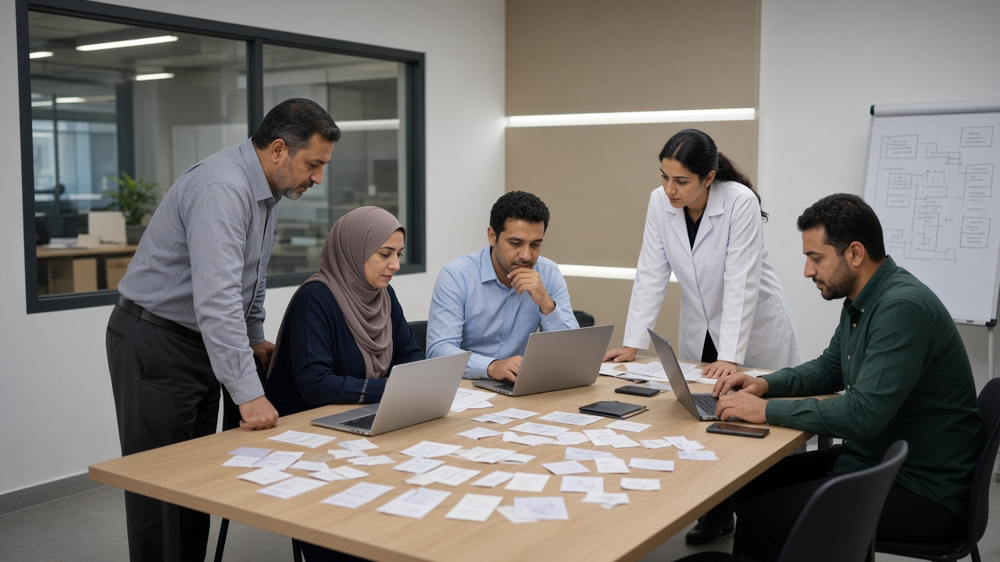

تابع تقدّم المشاريع على الخريطة
نسب الإنجاز والحالة والمواعيد عبر الوكالات الثلاث.
- مكتمل
- قيد التنفيذ
- يحتاج متابعة
- متأخر
- متوقف
- مخطط
وكالة
وكالة التحول الرقمي
تتولى رقمنة خدمات الأمانة، والبنية التقنية، والبيانات، وحماية الأنظمة.
24٪متوسط هذا العرض · 3 مشاريع
 قيد التنفيذ تنبيه
قيد التنفيذ تنبيه
أتمتة مسار الرخص التجارية
اختصار رحلة الرخصة بربط الاشتراطات والسداد والإصدار.
27٪
حي الشفا
متبقٍ 31 يومًا
 مخطط
مخطط
المساعد المعرفي لخدمة المستفيد
إجابات مبنية على أدلة الخدمات المعتمدة لتقليل الاتصالات المتكررة.
8٪
حي برزان
متبقٍ 259 يومًا
 قيد التنفيذ
قيد التنفيذ
التوأم الرقمي لمدينة حائل
نموذج مكاني للمدينة يربط الأصول والمشاريع بشواهد ميدانية.
36٪
سفح أجا
متبقٍ 412 يومًا
وكالة
وكالة الاستراتيجية
تتولى التخطيط والأداء والدراسات والشراكات التي توجّه أعمال الأمانة.
21٪متوسط هذا العرض · مشروعان

مخططإطار قياس أثر المشاريع الرأسمالية
منهج يربط صرف المشروع بالأثر على المؤشر لا بنسبة الإنجاز وحدها.
14٪
حي النقرة
متبقٍ 166 يومًا
 قيد التنفيذ
قيد التنفيذ
تحديث الخارطة الاستثمارية
حصر المواقع القابلة للاستثمار البلدي وتحديث اشتراطاتها.
28٪
حي لبدة
متبقٍ 319 يومًا
وكالة
وكالة التميز المؤسسي
تتولى الجودة وتجربة المستفيد وتطوير الإجراءات والابتكار.
32٪متوسط هذا العرض · 3 مشاريع
 قيد التنفيذ تنبيه
قيد التنفيذ تنبيه
 قيد التنفيذ
قيد التنفيذ
إعادة هندسة رحلة الرخص
تبسيط خطوات الرخصة كما يراها المستفيد بالتنسيق مع الأتمتة.
45٪
حي الشفا
متبقٍ 136 يومًا

قيد التنفيذ